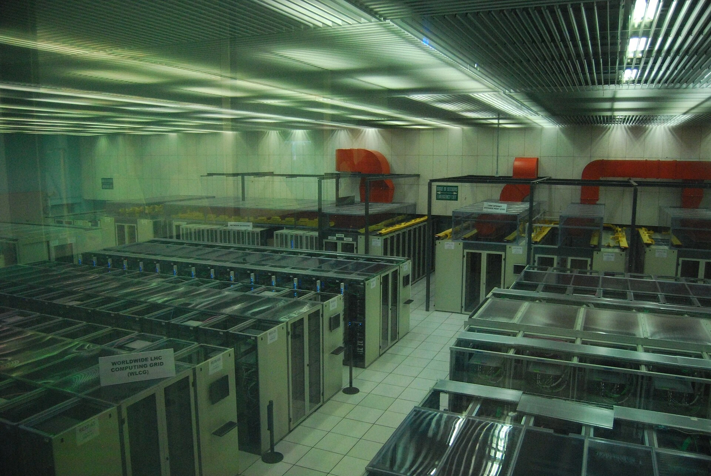
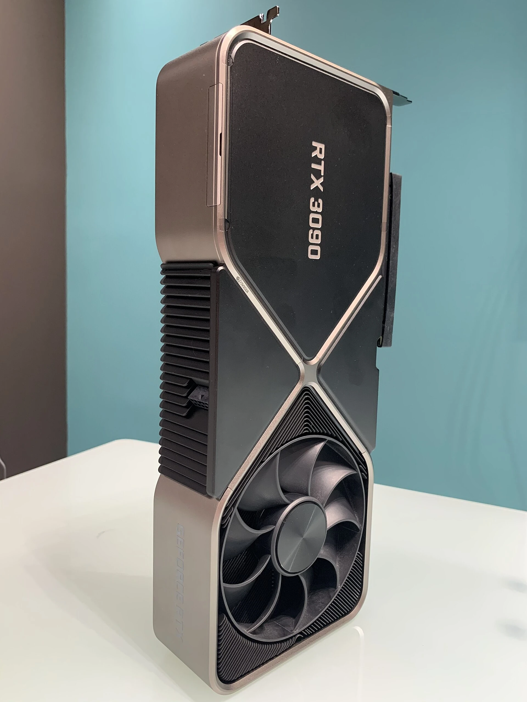
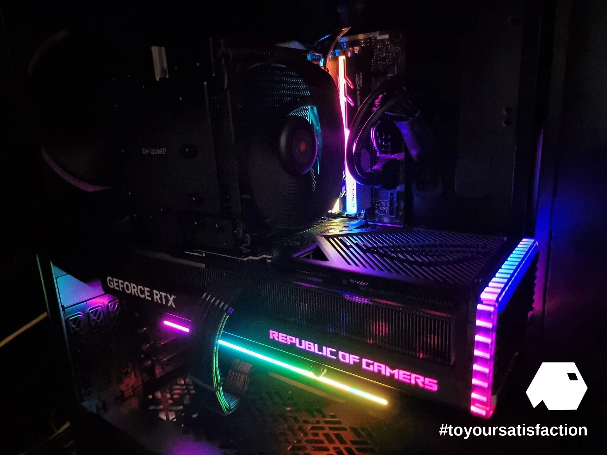

The fastest run of the afternoon began before any tuning happened, with a measurement of the ceiling. On November 25, Hugging Face published a serving experiment in which a coding agent, given a fixed inference-optimisation protocol, the Hugging Face command-line tool and access to Hugging Face Jobs, spent an afternoon hill-climbing Inkling 2 Mini on a single NVIDIA RTX PRO 6000 with 96 gigabytes of memory. Across 46 valid benchmark runs, reported by Hugging Face, single-user decode rose from 136 to 190.6 tokens per second, a gain of 40 percent, and aggregate throughput for eight users rose from about 570 to 716 tokens per second. The winning configuration now runs as an Inference Endpoint from a pinned image digest, with logs, scripts and raw measurements published.
Inkling 2 Mini arrived the previous week, in Hugging Face reporting, as a looped Mixture-of-Experts model with about 26 billion total parameters and 3 billion active per token, multimodal inputs and a context window of one million tokens. The architecture helps explain both the speed and the difficulty: 24 physical layers, with the middle 12 layers running three times, so every token passes through 48 layers. The checkpoint ships in mixed NVFP4 and MXFP8 formats and bundles a DSpark drafter for speculative decoding. Published serving recipes targeted NVIDIA B200 and GB300 hardware, leaving the RTX PRO 6000, a different compute class, without a ready recipe where kernel compatibility can differ.
01 · The announcement
The result came in two steps, and the order matters. Switching from the baseline SGLang setup, running without speculative decoding, to a nightly build of vLLM raised single-user decode from 136 to 157 tokens per second, about 15 percent, in Hugging Face reporting. Enabling DSpark speculative decoding, with seven draft tokens and probabilistic draft sampling, added a further 21 percent, reaching 190.6 tokens per second across four runs clustered tightly between 189.3 and 191.1. Two memory settings made the combination start at all on the card: a maximum model length of 262,144 tokens, and a graphics memory utilisation target of 0.85. Without those settings, the default cache for the full context and a changed memory default each caused out-of-memory failures.

02 · Why the protocol matters more than the gain
Speed claims are cheap; a protocol that can refuse a false gain is the valuable part. The inference-optimisation skill fixed the method before the agent touched a flag: measure the hardware and estimate theoretical ceilings first, change one variable at a time, bracket every candidate between two control runs, and keep a change only when the candidate beats both controls without regressing other measures. Every run went into a written plan, including regressions and dead ends. A fixed panel of six prompts — code, an explanation, a story, a comparison table, a bash script and a history summary — kept the workload stable across runs, at the model default temperature, with repeated trials whenever speculative decoding was enabled.
The discipline caught real illusions. One SGLang environment setting appeared to add 4 percent on a first run and then failed to reproduce against fresh controls, so the gain was discarded. Engine variance explains why the bracket matters: across identical runs, vLLM stayed within 0.4 percent, while SGLang swung by plus or minus 4.5 percent, wide enough to manufacture a phantom improvement from noise alone. A single heroic run proves nothing. A candidate that beats the control before and the control after has earned belief.
03 · The operations angle
Context engineering at Ovia since December 2022, and AI operations practice behind an NVIDIA-Certified Professional: AI Operations credential, run on the same order of work: context and serving conditions are part of the system, never background detail. A model served badly is a different product from the same model served well, and the difference here was 40 percent on identical weights and identical hardware. The craft sits in the unglamorous layers — engine choice, draft length, sampling method, cache sizing, memory headroom — and in the willingness to log what failed. The published account lists the failures plainly: shorter draft lengths rejected at startup, a greedy draft sampling setting that cost 11 percent, an adaptive verification flag that raised an assertion error, and a quantisation option supported only for a different drafter family.

04 · Caveats and fine print
Every figure in the source post is reported by Hugging Face, the organisation running the experiment and hosting the endpoint, and the post reads as an engineering account rather than an independent audit. The theoretical ceiling deserves the same care: the agent measured copy bandwidth of 1,469 gigabytes per second on the card and estimated a single-user ceiling near 256 tokens per second without speculation, falling to about 201 tokens per second once speculative verification reads a larger union of experts per layer. At 190.6 tokens per second, the winning setup sits near 95 percent of that adjusted ceiling — a strong result, and also a statement that the remaining headroom belongs to a better drafter or a leaner verification path, not to more flag combinations. Nightly builds carry a further caveat: behaviour can shift between builds, which is exactly why the deployment pinned an exact image digest and model revision.
05 · Verification before deployment
Before deployment, the pinned configuration passed acceptance gates inside a Job: needle retrieval three of three near half context and three of three near full tested context, a concurrent soak of four long requests with retrieval intact, and greedy equivalence checks showing outputs byte-identical with and without speculation across the prompt panel. Only then did a single deploy command publish the endpoint, with authenticated access and scale-to-zero after an idle hour. Running the benchmark against the live endpoint returned 194.9 tokens per second for a single user, consistent with the Job runs once network travel is accounted for. The sequence — tune, bracket, verify equivalence, pin, then deploy — is the part worth copying, whatever model or card comes next.
06 · What to watch
Watch whether other serving teams publish bracketed controls alongside headline speeds; a tokens-per-second figure without a control protocol asks for trust the reader cannot check. Watch, too, whether agent-run tuning becomes routine operations work: an agent following a strict experimental protocol, logging dead ends and stopping at a measured hardware ceiling, demonstrates a mature division of labour — judgement in the protocol, stamina in the search. The weights stayed fixed throughout. The gains came from the harness, the engine and the discipline around both, which is where production value so often waits, unmeasured.
Estimate the ceiling before chasing the number. One card, one afternoon, one protocol — and a result that states plainly where further effort stops paying.

References
- Hugging Face — “Hill-climbing Inkling 2 Mini inference on one RTX PRO 6000”, November 25, 2026: https://huggingface.co/blog/inkling-2-mini-inference-hillclimb
- Photographs: an NVIDIA RTX 4090 graphics card powered on inside a custom-built computer, photographed with an aftermarket power cable — Benlisquare, Creative Commons Attribution-Share Alike 4.0, via Wikimedia Commons: https://commons.wikimedia.org/wiki/File:Asus_Strix_RTX_4090_operational_with_aftermarket_12VHPWR_cable.jpg
- Photographs: front of server racks at NERSC, with overhead cable railing — Derrick Coetzee, Creative Commons CC0 1.0, via Wikimedia Commons: https://commons.wikimedia.org/wiki/File:Front_of_server_racks_at_NERSC.jpg
- Photographs: servers of the Worldwide LHC Computing Grid at CERN — Sashimi-b, Creative Commons Attribution 4.0, via Wikimedia Commons: https://commons.wikimedia.org/wiki/File:Worldwide_LHC_Computing_Grid.jpg
- Photographs: GeForce RTX 3090 Founders Edition graphics card — Adam Kapetanakis, Creative Commons Attribution-Share Alike 4.0, via Wikimedia Commons: https://commons.wikimedia.org/wiki/File:RTX_3090_Founders_Edition!.jpg
- OVIA Inc Studio Lab — AI operations and context engineering, managed end to end: https://oviainc.github.io/ai-services/